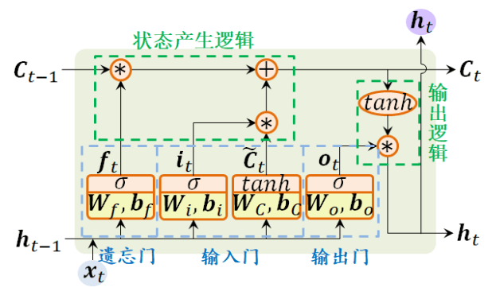
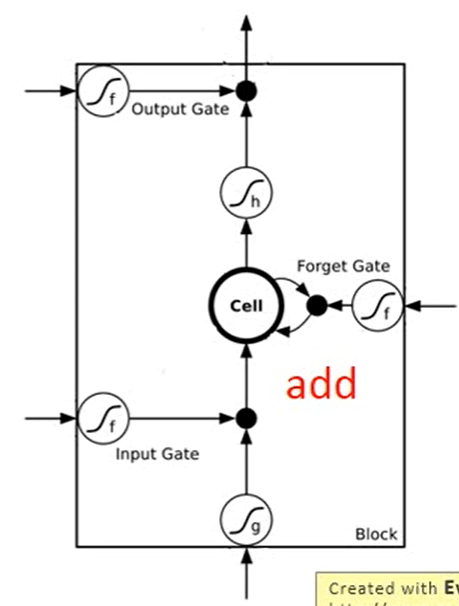

ML学习笔记 #01 CNN & RNN
1 卷积神经网络 | Convolution Neural Network
1.1 why cnn?
一张图片是三维的矩阵，对应的维度为 \([width, col, channel]\)。将三维的矩阵 flatten 为 channel 个 \(width \times col\) 的长向量，并输入神经网络。
这样的做法存在着以下缺点：
全连接参数多
在全连接前馈神经网络中, 如果第 \(l\) 层有 \(M_{l}\) 个神经元，第 \(l-1\) 层有 \(M_{l-1}\) 个 神经元，连接边有 \(M_{l} \times M_{l-1}\) 个，权重矩阵有 \(M_{l} \times M_{l-1}\) 个参数。当 \(M_{l}\) 和 \(M_{l-1}\) 都很大时，权重参数非常多，训练效率降低，易出现过拟合。
局部不变性
自然图像中的物体都具有局部性特征（如图中猫的耳朵、眼睛，对应物体分类而言是重要的特征）， 而全连接前馈网络很难提取。
1.2 结构 | Structure
CNN 并非是对旋转、放大不变的，因此它需要数据增强。
感受野 | Receptive field
stride：感受野步长大小 \(S\)
padding：填充大小 \(P\)
kernel size：感受野大小 \(W \times W\)
卷积层 | Convolution
- 从神经网络的角度理解：
- 不同的感受野共享参数
- 从 Filter 的角度理解：
- 使用 Filter 扫整张图片，提取一个局部区域的特征， 不同的卷积核相当于不同的特征提取器
- 卷积层输出大小：\(N = (W − F + 2P)/S + 1\)
池化层 | Pooling
特点：无需学习的参数
作用
进行特征选择，降低特征数量，从而减少参数数量。
原因
卷积层虽然可以显著减少网络中连接的数量，但特征映射组中的神经元个数并没有显著减少。如果后面接一个分类器，分类器的输入维数依然很高，很容易出现过拟合、计算复杂度高。 在卷积层之后加上一个汇聚层，从而降低特征维数，避免过拟合。
池化函数
- Max Pooling：最大池化，选出最显著的像素
- Mean Pooling：平均池化
1.3 图片转换 | Image Transformation
平移、旋转、缩放都是在原始对图像矩阵上进行运算。
缩放 \[ \left[\begin{array}{l} x^{\prime} \\ y^{\prime} \end{array}\right]=\left[\begin{array}{cc} a & 0 \\ 0 & d \end{array}\right]\left[\begin{array}{l} x \\ y \end{array}\right]+\left[\begin{array}{l} 0 \\ 0 \end{array}\right] \]
旋转，旋转 \(\theta\) ° \[ \left[\begin{array}{l} x^{\prime} \\ y^{\prime} \end{array}\right]=\left[\begin{array}{cc} \cos \theta & -\sin \theta \\ \sin \theta & \cos \theta \end{array}\right]\left[\begin{array}{l} x \\ y \end{array}\right]+\left[\begin{array}{l} 0 \\ 0 \end{array}\right] \]
2 循环神经网络 | RNN
在许多现实任务中，网络的输出不仅和当前时刻的输入相关， 也和其过去一段时间的输出相关。例如一个有限状态自动机， 其下一个时刻的状态（ 输出） 不仅仅和当前输入相关， 也和当前状态（ 上一个时刻的输出） 相关。
为了处理时序数据并利用其历史信息， 需要让网络具有短期记忆能力。而前馈网络是一种静态网络， 不具备这种记忆能力，因此提出了循环神经网络 RNN。
2.1 简单循环网络 | Simple Recurrent Network
有特定的 memory 存储上一个时刻的状态值
令向量 \(\boldsymbol{x}_t \in \mathbb{R}^M\) 表示在时刻 \(t\) 时网络的输入， \(\boldsymbol{h}_t \in \mathbb{R}^D\) 表示隐藏层状态值，则 \(\boldsymbol{h}_t\) 不仅和当前时刻的输入 \(\boldsymbol{x}_t\) 相关, 也和上一个时刻的 隐藏层状态 \(\boldsymbol{h}_{t-1}\) 相关，更新公式为 \[ \boldsymbol{z}_t=\boldsymbol{U} \boldsymbol{h}_{t-1}+\boldsymbol{W} \boldsymbol{x}_t+\boldsymbol{b} \]
\[ \boldsymbol{h}_t=f\left(\boldsymbol{z}_t\right) \]
缺点：RNN 每个时刻计算结果后乘 \(w\) 作为下一刻的输入，导致最后一次计算的结果形式上是 \(w\) 累乘。并使用非线性激活函数为 Logistic 函数或 Tanh 函数作为非线性激活函数， 其导数值都小于 1。在建模长时间间隔（ Long Range） 的状态之间的依赖关系时，会出现 梯度消失（gradient vanishing） 和 gradient explode 的问题。
2.2 长短期记忆网络 | LSTM
为了改善循环神经网络的长程依赖问题， 引入门控机制来控制信息的累积速度， 包括有选择地加入新的信息， 并有选择地遗忘之前累积的信息。
因此，长短期记忆网络（ Long Short-Term Memory Network， LSTM）被提出，主要改进点有两个方面：
- 新的内部状态： LSTM网络引入新的内部状态 \(C_t\) 专门进行线性的循环信息传递， 同时（ 非线性地） 输出信息给隐藏层的外部状态 \(h_t\) ， \(C_t\) 计算公式如下：
\[ \begin{aligned} \boldsymbol{C}_t &=\boldsymbol{f}_t \odot \boldsymbol{C}_{t-1}+\boldsymbol{i}_t \odot \tilde{\boldsymbol{C}}_t \\ \boldsymbol{h}_t &=\boldsymbol{o}_t \odot \tanh \left(\boldsymbol{C}_t\right) \end{aligned} \]
其中 $$ 表示向量元素乘积，\(\tilde{\boldsymbol{C}}_t\) 是通过非线性函数得到新的候选状态，即 new memory \[ \tilde{\boldsymbol{C}}_t = tanh(\boldsymbol{W}_{c}\boldsymbol{x}_t + \boldsymbol{U}_{c}\boldsymbol{h}_{t-1} + \boldsymbol{b}_{c}) \] 
门控机制： 门（ gate） 为一个二值变量{0, 1}， 0代表关闭状态， 不许任何信息通过； 1代表开放状态， 允许所有信息通过。LSTM 引入三个“门” 分别为输入门 \(\boldsymbol{i}_{t}\)、遗忘门 \(\boldsymbol{f}_{t}\) 和输出门 \(\boldsymbol{o}_{t}\)。这三个门 是一种“软” 门， 取值在 (0, 1) 之间，以一定的比例允许信息通过 。
- 遗忘门 \(\boldsymbol{f}_{t}\) 控制上一个时刻的内部状态 \(\boldsymbol{C}_{t-1}\) 需要遗忘多少信息
- 输入门 \(\boldsymbol{i}_{t}\) 控制当前时刻的候选状态 $_t $ 有多少信息需要保存
- 输出门 \(\boldsymbol{o}_{t}\) 控制当前时刻的内部状态 \(\boldsymbol{C}_{t}\) 有多少信息需要输出给外部状态 $_t $
\[ \begin{aligned} \boldsymbol{i}_t &=\sigma\left(\boldsymbol{W}_i \boldsymbol{x}_t+\boldsymbol{U}_i \boldsymbol{h}_{t-1}+\boldsymbol{b}_i\right), \\ \boldsymbol{f}_t &=\sigma\left(\boldsymbol{W}_f \boldsymbol{x}_t+\boldsymbol{U}_f \boldsymbol{h}_{t-1}+\boldsymbol{b}_f\right) \\ \boldsymbol{o}_t &=\sigma\left(\boldsymbol{W}_o \boldsymbol{x}_t+\boldsymbol{U}_o \boldsymbol{h}_{t-1}+\boldsymbol{b}_o\right) \end{aligned} \]
注意：\(\boldsymbol{W}_*\)、\(\boldsymbol{U}_*\)、\(\boldsymbol{b}_*\)均为可学习的网络参数，也可以将 \(\boldsymbol{x}_t\)、\(\boldsymbol{h}_{t-1}\) 拼接在一起，共享参数 \(\boldsymbol{W}_*\)
LSTM是涉及memory 和 input 状态信息的累加，一定程度上解决了 gradient vanishing 问题。
与简单循环网络的区别
- 简单循环网络中的隐状态 \(\boldsymbol{h}\) 存储了历史信息， 每个时刻都会被重写， 是一种短期记忆。
- LSTM 中, \(\boldsymbol{h}\) 看作网络参数， 隐含了从训练数据中学到的经验， 其更新周期要远远慢于短期记忆。记忆单元 \(\boldsymbol{C}\) 可以在某个时刻捕捉到某个关键信息，并将此关键信息保存一定的时间间隔生命。

2.3 GRU | 门控循环单元
GRU（Gate Recurrent Unit）是 RNN 的一种。和 LSTM 一样，也是为了解决长期记忆和反向传播中的梯度等问题而提出来的，相比之下参数量少，更容易进行训练，提高训练效率。
- 模型输入：上一个时刻传输的状态 \(h_{t−1}\) 和当前节点的输入 \(x_t\) ，相比于 LSTM 只有2个输入
- 门控状态：其中 \(r\) 控制重置的门控（reset gate）， \(z\) 为控制更新的门控（update gate），update gate的作用类似于input gate和forget gate
\[ \begin{aligned} &z_t=\sigma\left(W_z \cdot\left[h_{t-1}, x_t\right]\right) \\ &r_t=\sigma\left(W_r \cdot\left[h_{t-1}, x_t\right]\right) \\ \end{aligned} \]
新的候选状态： \[ \hat{h}_t=\tanh \left(W \cdot\left[r_t* h_{t-1}, x_t\right]\right) \\ \]
更新状态：同时进行了遗忘、记忆两个步骤 \[ h_t=\left(1-z_t\right) * h_{t-1}+z_t * \hat{h}_t \]
- 特点在于：使用了同一个门控 z 就同时可以进行遗忘和选择记忆（LSTM则要使用多个门控）。
- 遗忘 \(z\) 和选择 \(1−z\) 是联动的。对于传递进来的维度信息，会进行选择性遗忘，遗忘了多少权重 \(z\)，就使用包含当前输入的 \(\hat{h}_t\) 中所对应的权重进行弥补 \(1−z\)。以保持一种”恒定“状态。
2.4 应用
- 序列到类别模式
- 同步的序列到序列模式
- 异步的序列到序列模式